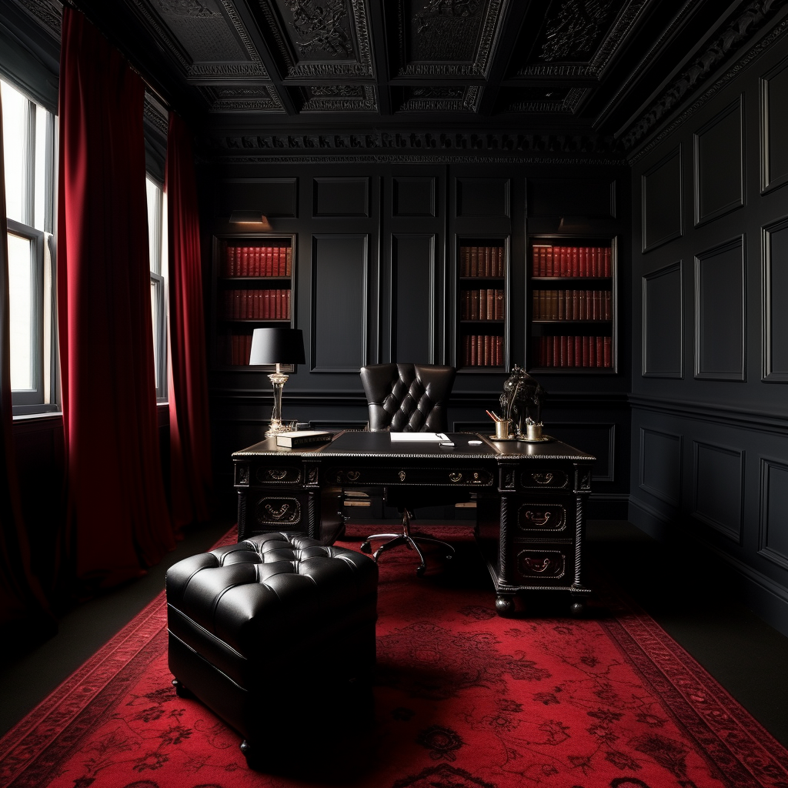
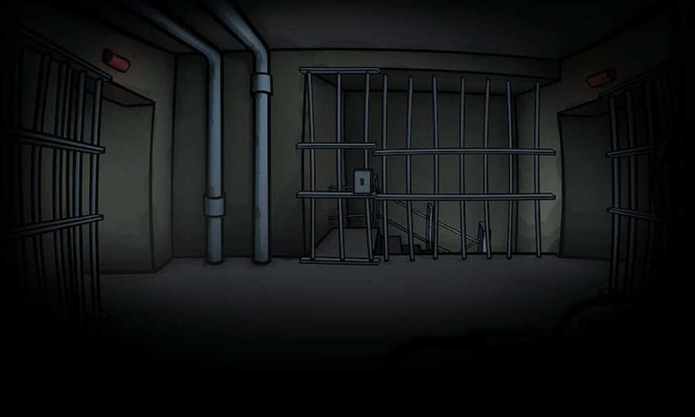

Le jeu d'évasion, également désigné par les termes anglais escape game ou escape room est un type de jeu de rôle grandeur nature constituant la déclinaison physique des jeux vidéo de type « escape the room ».


Le jeu d'évasion consiste la plupart du temps à tenter de s’échapper d’une pièce en un temps limité (généralement une heure) et se pratique habituellement en groupe, même si des concepts existent pour une seule personne (par exemple, Lockdown à Singapour).
Une joueuse d'un jeu d'évasion en train d'examiner un indice.
La plupart du temps par groupe de deux à cinq/six participants (bien qu'il existe des enseignes adaptées à des groupes plus grands), les joueurs doivent chercher des indices disséminés dans une ou plusieurs pièces, puis les combiner pour avancer dans la salle.
Le but est généralement de sortir d'une pièce (d’où le nom d'escape room), mais il peut aussi être d'apporter une solution à un autre problème, comme résoudre un meurtre ou trouver un trésor.
Certains jeux d'évasion sont construits autour d’une histoire, tandis que d’autres proposent une succession de jeux de logique déconnectés les uns des autres.[réf. souhaitée]
Bien qu’adaptés à un large public, adolescents, familles ou seniors, les jeux d'évasion ont pour cœur de cible les 25-40 ans.
Une prison, centre de détention ou pénitencier est une institution dédiée à l’enfermement de certaines personnes condamnées appelées prisonniers ou détenus. Par extension, le terme « prison » désigne également la peine d'incarcération, comme dans l'expression « cinq ans de prison ».
En France, il existe plusieurs catégories d'établissements pénitentiaires, à savoir : les maisons d'arrêt, les centres de détention, les maisons centrales, les centres de semi-liberté et les centres pénitentiaires (qui, pour ces derniers, ont la particularité de réunir au moins deux types d'établissement, comme, par exemple, une maison d'arrêt et un centre de détention).
